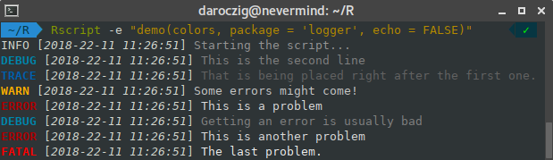

A lightweight, modern and flexible logging utility for R – heavily inspired by the futile.logger R package and logging Python module.
Installation
install.packages("logger")The most recent, development version of logger can also be installed from GitHub:
# install.packages("pak")
pak::pak("daroczig/logger")Quick example
Setting the log level threshold to something low and logging various messages in ad-hoc and programmatic ways:
library(logger)
log_threshold(DEBUG)
log_info("Script starting up...")
#> INFO [2024-08-15 11:59:27] Script starting up...
pkgs <- available.packages()
log_info("There are {nrow(pkgs)} R packages hosted on CRAN!")
#> INFO [2024-08-15 11:59:28] There are 21131 R packages hosted on CRAN!
for (letter in letters) {
lpkgs <- sum(grepl(letter, pkgs[, "Package"], ignore.case = TRUE))
log_level(
if (lpkgs < 5000) TRACE else DEBUG,
"{lpkgs} R packages including the {shQuote(letter)} letter"
)
}
#> DEBUG [2024-08-15 11:59:28] 10193 R packages including the 'a' letter
#> DEBUG [2024-08-15 11:59:28] 7016 R packages including the 'c' letter
#> DEBUG [2024-08-15 11:59:28] 5751 R packages including the 'd' letter
#> DEBUG [2024-08-15 11:59:28] 10907 R packages including the 'e' letter
#> DEBUG [2024-08-15 11:59:28] 8825 R packages including the 'i' letter
#> DEBUG [2024-08-15 11:59:28] 7059 R packages including the 'l' letter
#> DEBUG [2024-08-15 11:59:28] 7045 R packages including the 'm' letter
#> DEBUG [2024-08-15 11:59:28] 6665 R packages including the 'n' letter
#> DEBUG [2024-08-15 11:59:28] 7863 R packages including the 'o' letter
#> DEBUG [2024-08-15 11:59:28] 6581 R packages including the 'p' letter
#> DEBUG [2024-08-15 11:59:28] 11229 R packages including the 'r' letter
#> DEBUG [2024-08-15 11:59:28] 10296 R packages including the 's' letter
#> DEBUG [2024-08-15 11:59:28] 9531 R packages including the 't' letter
log_warn("There might be many, like {1:2} or more warnings!!!")
#> WARN [2024-08-15 11:59:28] There might be many, like 1 or more warnings!!!
#> WARN [2024-08-15 11:59:28] There might be many, like 2 or more warnings!!!You can even use a custom log layout to render the log records with colors, as you can see in layout_glue_colors():

But you could set up any custom colors and layout, eg using custom colors only for the log levels, make it grayscale, include the calling function or R package namespace with specific colors etc. For more details, see vignette("write_custom_extensions").
Related work
There are many other logging packages available on CRAN:
-
futile.logger: probably the most popularlog4jvariant (and I’m a big fan) -
logging: just like Python’sloggingpackage -
lgr: built on top of R6. -
loggit: capturemessage,warningandstopfunction messages in a JSON file -
log4r:log4j-based, object-oriented logger -
rsyslog: logging tosyslogon ‘POSIX’-compatible operating systems -
lumberjack: provides a special operator to log changes in data
Why use logger? I decided to write the n+1th extensible log4j logger that fits my liking — and hopefully yours as well — with the aim to:
- Keep it close to
log4j. - Respect the modern function/variable naming conventions and general R coding style.
- By default, rely on
glue()when it comes to formatting / rendering log messages, but keep it flexible if others prefersprintf()(e.g. for performance reasons) or other functions. - Support vectorization (eg passing a vector to be logged on multiple lines).
- Make it easy to extend with new features (e.g. custom layouts, message formats and output).
- Prepare for writing to various services, streams etc
- Provide support for namespaces, preferably automatically finding and creating a custom namespace for all R packages writing log messages, each with optionally configurable log level threshold, message and output formats.
- Allow stacking loggers to implement logger hierarchy – even within a namespace, so that the very same
logcall can write all theTRACElog messages to the console, while only pushingERRORs to DataDog and egINFOmessages to CloudWatch. - Optionally colorize log message based on the log level.
- Make logging fun!
Welcome to the Bazaar! If you already use any of the above packages for logging, you might find vignette("migration") useful.